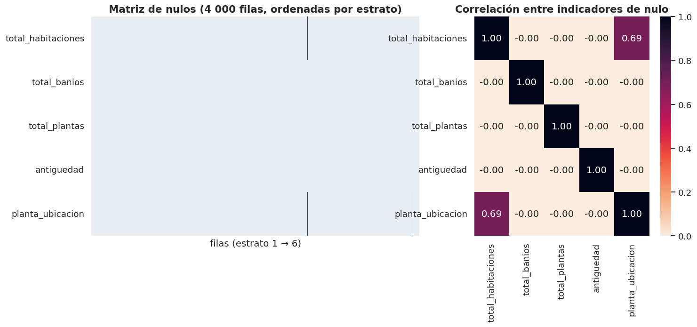
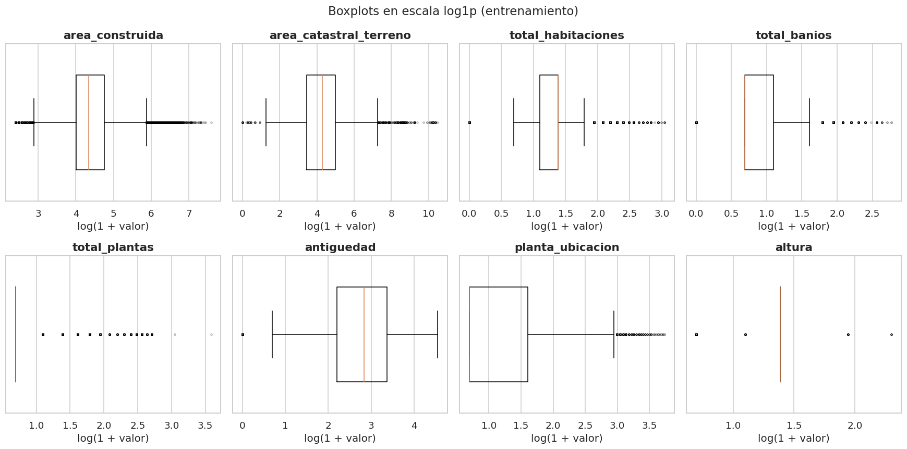
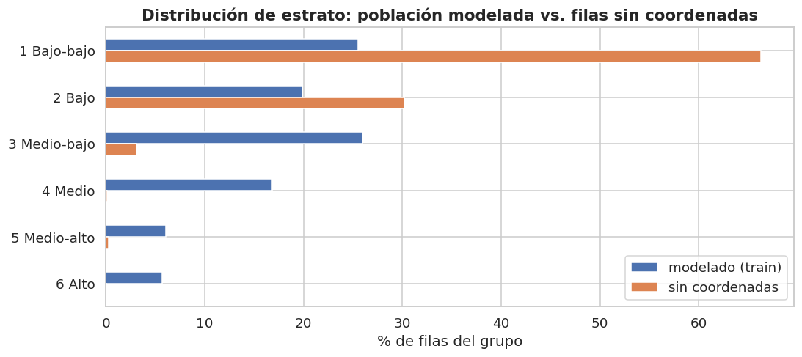

3. Calidad de datos en entrenamiento: faltantes, outliers y sesgo#
Autores: María Carolina Cantillo Orozco (200179105) y Juan Camilo Oñoro Araujo (200177329)
Completa la parte de calidad de datos de la Sección 1 del rubric que sí implica decisiones de modelado (cómo imputar, cómo tratar outliers). Por eso se hace solo con entrenamiento:
Valores faltantes: patrón (matriz de nulos) y mecanismo (MCAR / MAR / MNAR) con evidencia.
Outliers univariados: detección (IQR de Tukey) y tratamiento.
Sesgo de muestreo y representatividad: quién queda fuera del modelo.
Filas de entrenamiento: 218,870
3.1 Valores faltantes#
Patrón#
# Patrón de faltantes en train: conteo y % de nulos por variable, más una columna
# que indica si el nulo proviene sobre todo de una regla del cap. 1 (valor
# imposible: año 1512, piso 99...; o incoherencia dentro de la fila) o si ya venía
# vacío en el origen.
vars_nulos = C.NUMERICAS + C.CATEGORICAS
tabla_nulos = pd.DataFrame({
"n nulos": train[vars_nulos].isna().sum(),
"% nulos": 100 * train[vars_nulos].isna().mean(),
}).sort_values("% nulos", ascending=False)
# Criterio: si al menos la mitad de los nulos de la variable tiene su bandera
# flag_imposible_* (rango de dominio, paso 4) o flag_incoherente_* (coherencia
# dentro de la fila, paso 5) activa, ese es el origen principal. 'antiguedad'
# no tiene bandera propia: hereda la de 'anio_construccion', de donde se deriva.
# max(1, n) evita que una variable sin nulos (n = 0) cuente como "valor imposible".
tabla_nulos["origen principal"] = [
"valor imposible -> NaN" if f"flag_imposible_{v}" in train and train[f"flag_imposible_{v}"].sum() >= 0.5 * max(1, n)
else ("incoherencia en la fila -> NaN" if f"flag_incoherente_{v}" in train
and train[f"flag_incoherente_{v}"].sum() >= 0.5 * max(1, n)
else ("año imposible -> NaN" if v == "antiguedad" and train["flag_imposible_anio_construccion"].sum() >= 0.5 * max(1, n)
else "faltante en origen"))
for v, n in zip(tabla_nulos.index, tabla_nulos["n nulos"])]
tabla_nulos
| n nulos | % nulos | origen principal | |
|---|---|---|---|
| total_habitaciones | 271 | 0.124 | incoherencia en la fila -> NaN |
| planta_ubicacion | 237 | 0.108 | valor imposible -> NaN |
| antiguedad | 129 | 0.059 | año imposible -> NaN |
| total_banios | 28 | 0.013 | incoherencia en la fila -> NaN |
| total_plantas | 1 | 0.000 | valor imposible -> NaN |
| area_catastral_terreno | 0 | 0.000 | faltante en origen |
| area_construida | 0 | 0.000 | faltante en origen |
| altura | 0 | 0.000 | faltante en origen |
| tipo_vivienda | 0 | 0.000 | faltante en origen |
| uso | 0 | 0.000 | faltante en origen |
| condicion_predio | 0 | 0.000 | faltante en origen |
| destinacion_economica | 0 | 0.000 | faltante en origen |
| tipo_planta | 0 | 0.000 | faltante en origen |

Mecanismo (MCAR / MAR / MNAR)#
Con cientos de miles de filas la prueba de Little rechaza MCAR ante cualquier diferencia mínima, así que se usan tres evidencias complementarias y se interpreta la magnitud:
Faltante vs. estrato: chi² y V de Cramér entre el indicador de nulo y el objetivo. V ≈ 0 es compatible con MCAR respecto al objetivo.
Registros completos vs. incompletos: diferencia de medias estandarizada (SMD) en las demás variables. |SMD| < 0.1 se considera despreciable.
¿Se puede predecir el faltante? Regresión logística del indicador de nulo con las variables observadas (AUC por validación cruzada). AUC ≈ 0.5 → MCAR plausible; AUC claramente > 0.5 → el faltante depende de variables observadas (MAR). MNAR (depende del propio valor no observado) no se puede probar con los datos: se argumenta con conocimiento del dominio.
# Diagnóstico del mecanismo de faltantes con tres evidencias por variable:
# (1) V de Cramér entre el indicador de nulo y el estrato, (2) diferencia de medias
# estandarizada (SMD) entre registros con y sin nulo, y (3) AUC de una regresión
# logística que intenta predecir el nulo a partir de variables observadas.
# Variables observadas que se usan como "explicativas" del faltante.
observadas = ["area_construida", "total_habitaciones", "total_banios", "total_plantas", "x_km", "y_km"]
# Régimen del predio en one-hot (con "NA" como categoría) para añadirlo a la logística.
dummies_cond = pd.get_dummies(train["condicion_predio"].fillna("NA"), prefix="cond", dtype=float)
filas = []
for v in con_nulos:
ind = train[v].isna() # indicador de nulo de la variable v (True = falta)
if ind.sum() < 30:
continue # con menos de 30 nulos no hay base para ningún diagnóstico
# (1) Asociación nulo ~ estrato: V ≈ 0 es compatible con MCAR respecto al objetivo.
cv = E.cramers_v(ind, train[C.OBJETIVO])
# (2) SMD de cada variable observada entre filas con nulo (a) y sin nulo (b),
# usando la desviación estándar combinada; |SMD| < 0.1 se considera despreciable.
smd = {}
for o in observadas:
if o == v:
continue # no se compara la variable consigo misma
a, b = train.loc[ind, o].dropna(), train.loc[~ind, o].dropna()
sd = np.sqrt((a.var() + b.var()) / 2)
smd[o] = (a.mean() - b.mean()) / sd if sd > 0 else np.nan
# (3) Matriz de predictores del nulo: observadas (sin v) imputadas con su mediana
# de train, solo para este diagnóstico, más las dummies de condición del predio.
X = pd.concat([train[[o for o in observadas if o != v]].fillna(train[[o for o in observadas if o != v]].median()),
dummies_cond], axis=1)
# Submuestra de hasta 60 000 filas (semilla fija) para acotar el tiempo de cómputo.
sub = np.random.default_rng(C.SEED).choice(len(X), min(60_000, len(X)), replace=False)
# AUC promedio en CV de 3 folds; el escalado va dentro del pipeline para que se
# ajuste en cada fold. AUC ≈ 0.5 -> MCAR plausible; AUC alto -> MAR.
auc = cross_val_score(make_pipeline(StandardScaler(), LogisticRegression(max_iter=500)),
X.iloc[sub], ind.iloc[sub], cv=3, scoring="roc_auc").mean()
# Variable con la mayor |SMD| (los NaN se ignoran asignándoles -1 en la comparación).
smd_max = max(smd.items(), key=lambda t: abs(t[1]) if pd.notna(t[1]) else -1)
# Se guarda también la tasa de nulo en cada estrato (1/2/3/4/5/6) para leerla a ojo.
filas.append({"variable": v, "n nulos": int(ind.sum()), "% nulos": 100 * ind.mean(), "V (nulo~estrato)": cv["V"],
"|SMD| máx.": abs(smd_max[1]), "en variable": smd_max[0], "AUC predecir nulo": auc,
"tasa de nulo por estrato (%)": " / ".join(f"{100 * r:.1f}" for r in
ind.groupby(train[C.OBJETIVO]).mean())})
mecanismo = pd.DataFrame(filas).set_index("variable") if filas else pd.DataFrame()
# Regla de lectura que combina las tres evidencias. MCAR solo si las tres son
# débiles a la vez; en otro caso el faltante depende de lo observado (MAR). MNAR no
# se puede probar con los datos y se argumenta con conocimiento del dominio.
def lectura_mecanismo(r):
if r["n nulos"] < 100:
return "muy pocos casos (<100): no evaluable; proviene de valores imposibles"
if r["AUC predecir nulo"] < 0.6 and r["V (nulo~estrato)"] < 0.05 and r["|SMD| máx."] < 0.1:
return "compatible con MCAR"
return "MAR (depende de variables observadas)"
if len(mecanismo):
mecanismo["lectura"] = mecanismo.apply(lectura_mecanismo, axis=1)
mecanismo
| n nulos | % nulos | V (nulo~estrato) | |SMD| máx. | en variable | AUC predecir nulo | tasa de nulo por estrato (%) | lectura | |
|---|---|---|---|---|---|---|---|---|
| variable | ||||||||
| total_habitaciones | 271 | 0.124 | 0.037 | 1.634 | area_construida | 0.997 | 0.1 / 0.0 / 0.3 / 0.0 / 0.1 / 0.0 | MAR (depende de variables observadas) |
| antiguedad | 129 | 0.059 | 0.052 | 1.961 | y_km | 0.971 | 0.0 / 0.0 / 0.0 / 0.3 / 0.0 / 0.0 | MAR (depende de variables observadas) |
| planta_ubicacion | 237 | 0.108 | 0.041 | 1.645 | total_habitaciones | 0.963 | 0.0 / 0.0 / 0.3 / 0.0 / 0.1 / 0.2 | MAR (depende de variables observadas) |
Interpretación y decisión
Los faltantes son mínimos. En train, la variable con más nulos es
total_habitacionescon 271 (0.12 %); luegoplanta_ubicacioncon 237 (0.11 %),antiguedadcon 129 (0.06 %), baños con 28 (0.01 %) y plantas con 1. Todos provienen de las reglas del capítulo 1, no de celdas vacías en origen: pisos codificados (97–99) y años centinela (paso 4), e incoherencias dentro de la fila (paso 5). La columna «origen principal» lo confirma: planta y plantas salen como «valor imposible», antigüedad como «año imposible», y habitaciones y baños como «incoherencia en la fila» (banderaflag_incoherente_*), igual que en el dataset completo, donde todos los nulos de habitaciones (0.107 %) y de baños (0.012 %) son incoherencias (cap. 1, columna «de ellos, por incoherencia»). Las variables sin nulos aparecen como «faltante en origen» solo porque es la etiqueta por defecto de la tabla.Baños tiene menos de 30 nulos y queda fuera del diagnóstico de mecanismo: no hay base para evaluarlo.
Habitaciones es MAR, pero por construcción: su nulo se predice casi perfectamente (AUC = 0.997) y la mayor diferencia está en
area_construida(|SMD| = 1.63), porque la regla anula las habitaciones cuando el área por habitación es menor de 6 m². El faltante depende de una variable observada (el área), no del azar.Piso de ubicación es MAR: su nulo se predice casi perfectamente (AUC = 0.963) y la mayor diferencia está en
total_habitaciones(|SMD| = 1.65); el 0.3 % de las unidades de estrato 3 tiene un código de piso, frente a ≤ 0.2 % en el resto. El código se concentra en ciertos edificios o sectores, no al azar.Antigüedad es MAR: su nulo se predice casi perfectamente con las variables observadas (AUC = 0.971) y la mayor diferencia estandarizada está en
y_km(|SMD| = 1.96), es decir, los años faltantes se concentran en una zona concreta de la ciudad (0.3 % de nulos en estrato 4 frente a ~0 % en el resto). Los 129 años imposibles del dataset completo (cap. 1) caen todos en train, lo que es coherente con esa concentración espacial. No es un faltante al azar: parece un proyecto o un sector cuyo año no se registró.Decisión: mediana + indicador de faltante, dentro del Pipeline (el indicador deja que el modelo use «no tener el dato» si eso informa el estrato). Con tan pocos nulos (< 1 %), la elección del imputador apenas afecta al modelo; lo importante es no aprenderlo con test. Ninguna variable supera el 30 % de faltantes, así que, siguiendo las notas del curso (9.10.4.1.4), no se elimina ninguna variable por faltantes.
# Registro de decisiones de imputación en decisiones_eda.json, con su motivo. El
# modelo base (cap. 10) lee este archivo, de modo que cada paso del Pipeline queda
# rastreado al hallazgo de este capítulo. La imputación se ajusta dentro del
# Pipeline, es decir, solo con los datos de entrenamiento de cada fold.
C.guardar_decision(
"imputacion_numericas", "mediana + indicador de faltante (SimpleImputer(add_indicator=True)), dentro del Pipeline",
"Faltantes < 30 % en todas las variables; mecanismo MAR/informativo según AUC y SMD (cap. 3.1); "
"la mediana es robusta a la asimetría fuerte de áreas y conteos.")
C.guardar_decision(
"imputacion_categoricas", "categoría explícita 'faltante'",
"Conserva la información de que el dato no existía, sin inventar una categoría real.")
[decisión registrada] imputacion_numericas = mediana + indicador de faltante (SimpleImputer(add_indicator=True)), dentro del Pipeline
motivo: Faltantes < 30 % en todas las variables; mecanismo MAR/informativo según AUC y SMD (cap. 3.1); la mediana es robusta a la asimetría fuerte de áreas y conteos.
[decisión registrada] imputacion_categoricas = categoría explícita 'faltante'
motivo: Conserva la información de que el dato no existía, sin inventar una categoría real.
3.2 Outliers univariados (IQR de Tukey)#
Los valores imposibles ya se convirtieron en NaN (capítulo 1). Lo que queda son valores extremos pero plausibles: una casa de 8 baños, un lote muy grande. Se cuantifican con la regla de Tukey \([Q_1 - 1.5\,IQR,\ Q_3 + 1.5\,IQR]\) y con un criterio más estricto (\(3\,IQR\), «outliers lejanos»).
# Outliers univariados con la regla de Tukey (1.5·IQR) y con el criterio de
# "outliers lejanos" (3·IQR), calculados solo con train. Se reportan también p99.9
# y máximo porque el p99.9 es el umbral de la winsorización que se decide después.
nums = [c for c in C.NUMERICAS if c in train]
filas = []
for c in nums:
v = train[c].dropna()
q1, q3 = v.quantile([.25, .75])
iqr = q3 - q1
# Fracción de valores fuera de las vallas de Tukey (1.5·IQR) y de las lejanas (3·IQR).
f15 = ((v < q1 - 1.5 * iqr) | (v > q3 + 1.5 * iqr)).mean()
f30 = ((v < q1 - 3 * iqr) | (v > q3 + 3 * iqr)).mean()
filas.append({"variable": c, "Q1": q1, "Q3": q3, "IQR": iqr, "lím. sup. 1.5·IQR": q3 + 1.5 * iqr,
"% fuera 1.5·IQR": 100 * f15, "% fuera 3·IQR": 100 * f30,
"p99.9": v.quantile(.999), "máx": v.max()})
outliers = pd.DataFrame(filas).set_index("variable")
outliers
| Q1 | Q3 | IQR | lím. sup. 1.5·IQR | % fuera 1.5·IQR | % fuera 3·IQR | p99.9 | máx | |
|---|---|---|---|---|---|---|---|---|
| variable | ||||||||
| area_construida | 54.000 | 115.000 | 61.000 | 206.500 | 5.973 | 2.115 | 692.131 | 1,971.000 |
| area_catastral_terreno | 30.600 | 144.500 | 113.900 | 315.350 | 4.833 | 1.297 | 5,193.000 | 36,022.000 |
| total_habitaciones | 2.000 | 3.000 | 1.000 | 4.500 | 5.598 | 0.969 | 12.000 | 20.000 |
| total_banios | 1.000 | 2.000 | 1.000 | 3.500 | 3.345 | 0.265 | 6.000 | 15.000 |
| total_plantas | 1.000 | 1.000 | 0.000 | 1.000 | 11.144 | 11.144 | 12.000 | 35.000 |
| antiguedad | 8.000 | 28.000 | 20.000 | 58.000 | 1.380 | 0.088 | 86.000 | 94.000 |
| planta_ubicacion | 1.000 | 4.000 | 3.000 | 8.500 | 7.980 | 1.356 | 20.000 | 41.000 |
| altura | 3.000 | 3.000 | 0.000 | 3.000 | 0.312 | 0.312 | 3.000 | 9.000 |

Interpretación y decisión
La regla de Tukey marca entre 3 % y 6 % de las filas en áreas, habitaciones y baños (8 % en piso de ubicación), pero muy pocas son «lejanas» (3·IQR): 2.1 % en área construida, 1.3 % en terreno, < 1 % en habitaciones y baños. Las distribuciones son muy asimétricas a la derecha; esos puntos son viviendas grandes, no errores.
En
total_plantasyalturala regla es inservible: su IQR es 0 (Q1 = Q3 = 1 planta; Q1 = Q3 = 3 m). En plantas, cualquier casa de dos pisos queda marcada como outlier (11.1 % de train); en altura, cualquier valor distinto de 3 (0.3 %). Es un ejemplo de por qué no se debe eliminar filas con una regla automática sin mirarla.Los máximos que quedan son grandes pero posibles: 1 971 m² construidos, 36 022 m² de terreno, 20 habitaciones, 15 baños y 35 plantas. Los de área construida, habitaciones y baños quedan dentro de los topes de la regla de registros agregados del cap. 1 (paso 2c: más de 2 000 m², 20 habitaciones o 15 baños es un edificio entero en una fila). El p99.9 (los umbrales que usará la winsorización) está en 692 m² de área construida, 5 193 m² de terreno, 12 habitaciones, 6 baños y 12 plantas.
En
planta_ubicacion, los códigos 97–99 ya se trataron como faltantes (cap. 1, techo del rango en 60): el p99.9 queda en 20 y el máximo en 41, un piso real de las torres más altas, no un código.Decisión: no se elimina ninguna fila por ser outlier estadístico, porque el área construida crece con el estrato (mediana de 54 m² en estrato 1 frente a 152 m² en estrato 6, cap. 6): las viviendas más grandes pesan más en las clases altas, que ya son minoritarias. Su influencia en el modelo lineal se reduce con (i)
log1pen las variables muy asimétricas (cap. 5) y (ii) winsorización a los percentiles 0.1 y 99.9 aprendidos en train dentro del Pipeline.Los outliers multivariados (combinaciones raras) se revisan en el capítulo 7.
# Se registra la decisión de winsorizar a los percentiles 0.1 y 99.9 en lugar de
# eliminar filas. Los cuantiles se aprenden en train dentro del Pipeline (clase de
# recorte de modelo.py), así que test nunca influye en los umbrales.
C.guardar_decision("winsorizacion_cuantiles", [0.001, 0.999],
"Colas largas plausibles (cap. 3.2): se recortan a p0.1/p99.9 de train dentro del "
"Pipeline en lugar de eliminar filas, para no sesgar las clases altas.")
[decisión registrada] winsorizacion_cuantiles = [0.001, 0.999]
motivo: Colas largas plausibles (cap. 3.2): se recortan a p0.1/p99.9 de train dentro del Pipeline en lugar de eliminar filas, para no sesgar las clases altas.
3.3 Sesgo de muestreo y representatividad#
¿A quién deja fuera el modelo? Se comparan las filas con coordenadas (población de modelado) contra las filas sin coordenadas, que no se pudieron ubicar (predios informales, capítulo 1). Para no mirar el conjunto de prueba, la comparación usa solo train frente a las filas no ubicables.
# Sesgo de cobertura: compara la distribución del estrato en la población modelada
# (solo train, para no mirar test) con la de las filas sin coordenadas, que quedan
# fuera del modelo. Si difieren mucho, el modelo no representa a toda la ciudad.
ruta_sin = C.CARPETA_PROCESADOS / "sin_coordenadas.parquet"
# Se lee el formato con que se guardó en el cap. 2 (parquet o, si no, CSV).
sin = pd.read_parquet(ruta_sin) if ruta_sin.exists() else pd.read_csv(ruta_sin.with_suffix(".csv"))
# % de cada estrato dentro de cada grupo; fillna(0) por si a un grupo le falta un estrato.
comp = pd.concat({
"modelado (train)": train[C.OBJETIVO].value_counts(normalize=True),
"sin coordenadas": sin[C.OBJETIVO].value_counts(normalize=True),
}, axis=1).sort_index().fillna(0).mul(100)
comp.index = [C.NOMBRES_CLASES[i] for i in comp.index]
# V de Cramér entre "grupo" (modelado / sin coordenadas) y estrato: se apilan ambos
# grupos en una sola tabla para medir la fuerza de la asociación (0 = sin sesgo).
cv_sesgo = E.cramers_v(pd.concat([pd.Series("modelado", index=train.index), pd.Series("sin", index=sin.index)],
ignore_index=True),
pd.concat([train[C.OBJETIVO], sin[C.OBJETIVO]], ignore_index=True))
print(f"V de Cramér (grupo ~ estrato) = {cv_sesgo['V']:.3f}")
comp
V de Cramér (grupo ~ estrato) = 0.424
| modelado (train) | sin coordenadas | |
|---|---|---|
| 1 Bajo-bajo | 25.542 | 66.315 |
| 2 Bajo | 19.866 | 30.187 |
| 3 Medio-bajo | 25.984 | 3.099 |
| 4 Medio | 16.857 | 0.089 |
| 5 Medio-alto | 6.091 | 0.269 |
| 6 Alto | 5.661 | 0.041 |
# Misma comparación para el régimen del predio (condicion_predio): sirve para
# explicar POR QUÉ faltan coordenadas (se espera que dominen los predios informales).
cond = pd.concat({
"modelado (train)": train["condicion_predio"].value_counts(normalize=True),
"sin coordenadas": sin["condicion_predio"].value_counts(normalize=True),
}, axis=1).fillna(0).mul(100)
cond
| modelado (train) | sin coordenadas | |
|---|---|---|
| condicion_predio | ||
| PH_Unidad_Predial | 52.459 | 0.460 |
| NPH | 39.933 | 0.000 |
| Informal | 7.580 | 99.540 |
| PH_Matriz | 0.028 | 0.000 |

Interpretación
El sesgo de cobertura es fuerte: de las filas sin coordenadas, el 66.3 % son estrato 1 y el 30.2 % estrato 2 (96.5 % en los dos estratos más bajos), frente a 25.5 % y 19.9 % en la población modelada. La V de Cramér entre «tener o no coordenadas» y el estrato es 0.42, una asociación grande.
La razón es estructural: el 99.5 % de las filas sin coordenadas son predios
Informal(sin lote propio ni edificio matriz de donde tomar un centroide). En train, lo informal pesa solo 7.6 %.Consecuencia: el modelo representa la ciudad formal. Aprenderá del estrato 1 sobre todo su versión formal, y sus métricas no deben extrapolarse a asentamientos informales. Se declara como limitación en las conclusiones. Mejora futura: ubicar estos predios con otra fuente (cartografía de manzanas o geocodificación de direcciones) o con el código de sector/barrio del NPN.